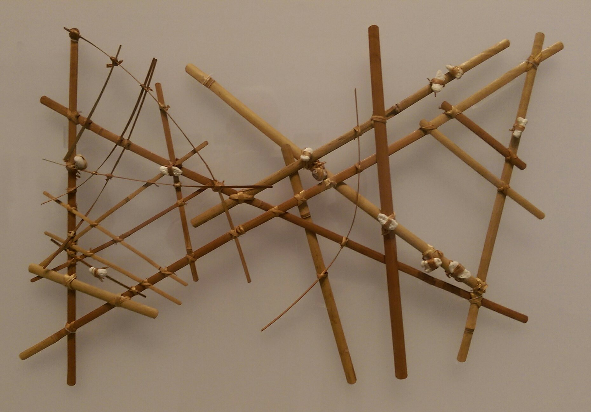
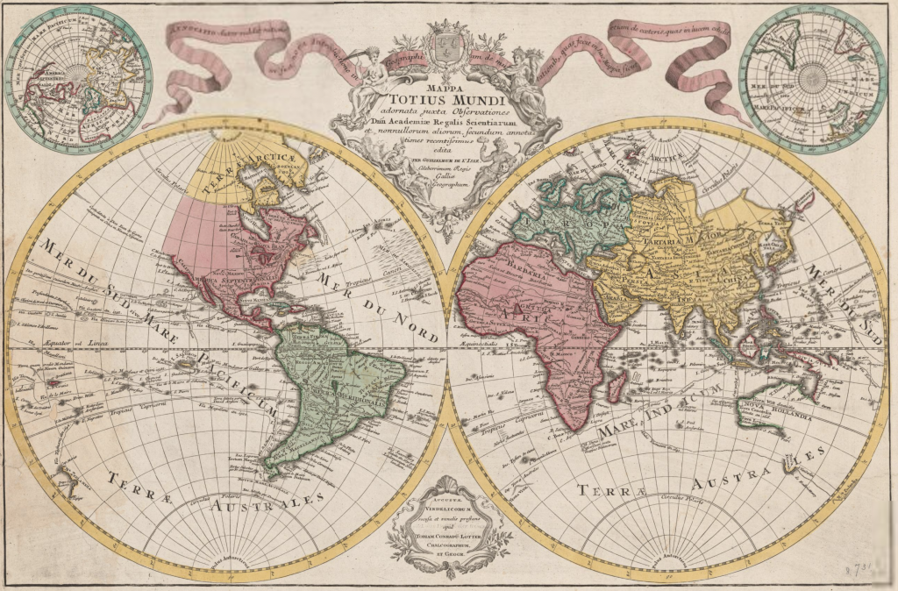
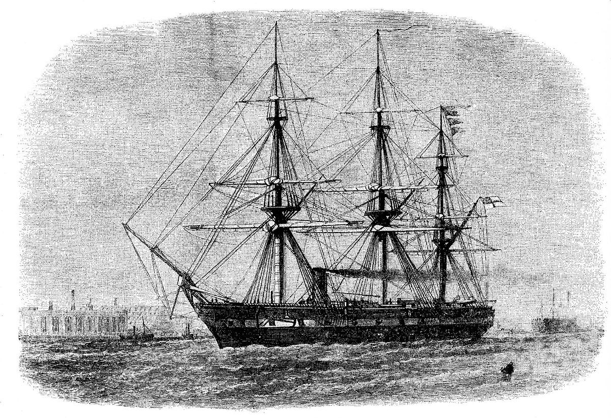
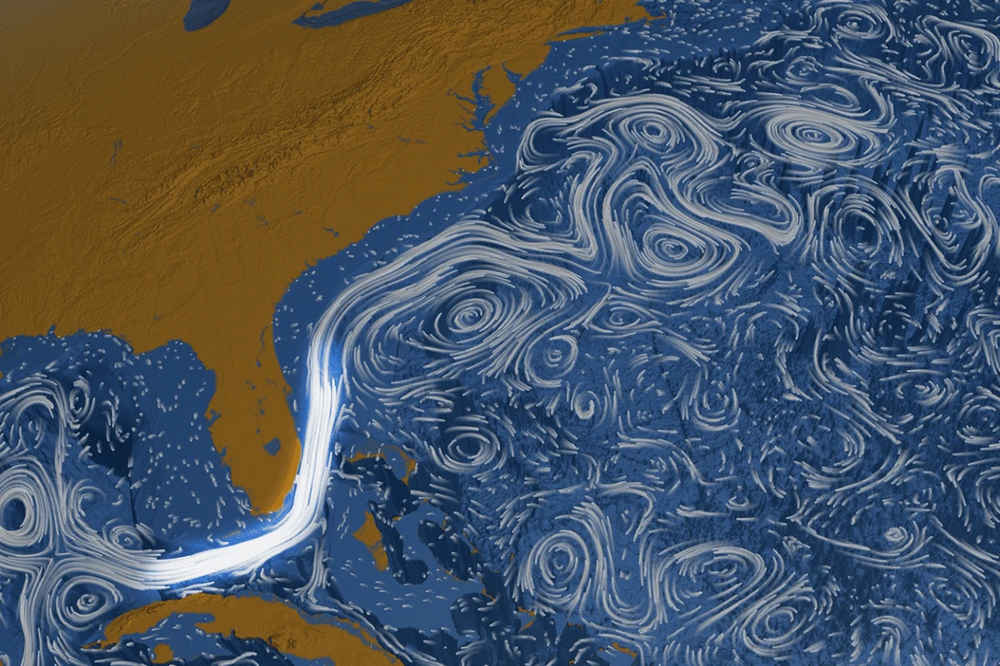
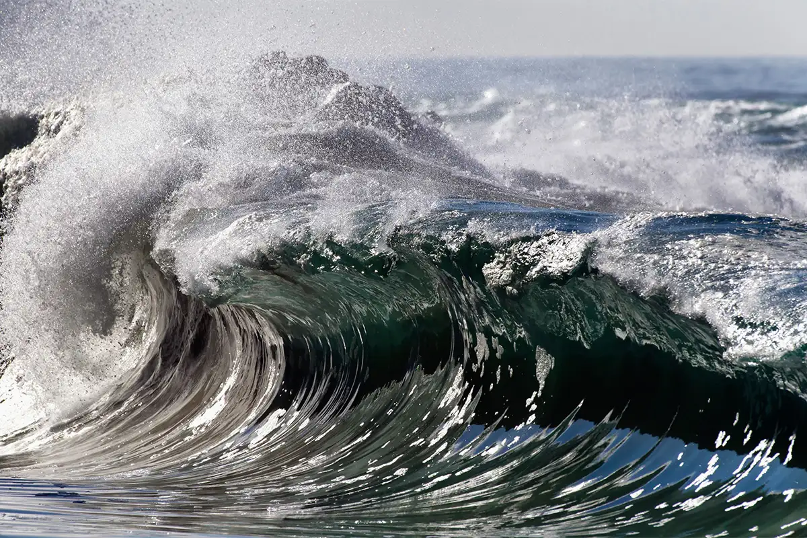

🌍 Ancient Ocean Myths & Navigation (Before 1000 BCE)
Long before scientific understanding, ancient civilizations viewed the ocean as a realm of mystery and mythology. The Greeks believed in sea gods like Poseidon, while Norse legends spoke of sea serpents. Despite these myths, early societies like the Polynesians mastered ocean navigation using stars, wind patterns, and wave observations, allowing them to voyage across vast distances and settle on distant islands. Their sophisticated navigation techniques were passed down orally through generations, showcasing an impressive understanding of the sea's behavior. These early explorations laid the groundwork for future maritime endeavors.
⛵ The Age of Exploration (1400s–1600s)
The 15th and 16th centuries marked a pivotal era in ocean exploration. European explorers like Christopher Columbus and Vasco da Gama embarked on voyages that connected continents and reshaped global trade. Advancements in shipbuilding and navigation tools, such as the astrolabe and compass, enabled longer sea journeys. These expeditions not only mapped uncharted territories but also facilitated cultural exchanges and the spread of goods and ideas. However, they also led to colonization and significant impacts on indigenous populations.
⚗️ The Birth of Ocean Science (1800s)
The 19th century saw the transformation of ocean exploration from adventurous voyages to systematic scientific inquiry. The HMS Challenger expedition (1872–1876) is often considered the foundation of modern oceanography. Scientists aboard collected extensive data on ocean temperatures, currents, marine life, and seafloor sediments. Their findings revealed the vast biodiversity of the deep sea and the complexity of oceanic systems. This era marked the beginning of oceanography as a recognized scientific discipline, driven by curiosity and empirical discovery.
🌋 Seeing the Seafloor (1900s–1960s)
Technological advancements in the early 20th century revolutionized our understanding of the ocean floor. The development of sonar during World War I allowed for detailed mapping of the seafloor, revealing features like mid-ocean ridges and deep-sea trenches. In 1960, the bathyscaphe Trieste descended to the Mariana Trench's deepest point, providing unprecedented insights into the deep ocean’s conditions. These discoveries challenged previous assumptions and highlighted the ocean’s complex geology and surprising life at extreme depths.

🛰️ Satellites & Global Monitoring (1970s–1990s)
The advent of satellite technology in the late 20th century enabled comprehensive monitoring of the oceans. Satellites like TOPEX/Poseidon provided data on sea surface temperatures, sea level changes, and ocean currents on a global scale. This information was crucial for understanding climate patterns, such as El Niño and La Niña, and their global impacts. Additionally, satellite imagery facilitated the tracking of marine pollution and coral reef health, greatly advancing marine conservation efforts.
🤖 Robots & Modern Exploration (2000s–Now)
In the 21st century, underwater robots like AUVs and ROVs have become essential tools for ocean exploration. These high-tech machines can dive to extreme depths, collect data, and capture high-resolution footage of the deep sea. Missions by NOAA’s Okeanos Explorer and others have led to the discovery of new marine species and ecosystems. Real-time communication allows global teams to collaborate on dives, democratizing ocean science and accelerating our understanding of this mysterious realm.

🔍 What We Still Don’t Know
Despite centuries of exploration, much of the ocean remains unexplored. Over 80% of the seafloor is still unmapped, and scientists estimate that millions of marine species are yet to be discovered. How the deep ocean interacts with Earth’s climate, how life persists in extreme environments, and what secrets lie at hydrothermal vents are just a few of the enduring questions. As technology progresses, so too will our ability to unlock the mysteries of the sea—but for now, the ocean remains Earth’s final frontier.
